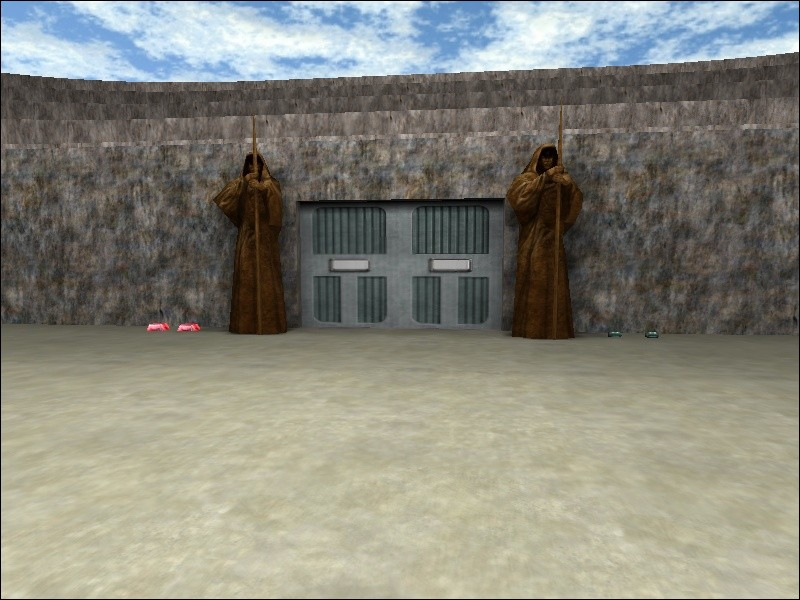

This page isn't much different than my Project page except for one thing: the content here is made for pre-existing games. This is gonna be stuff like maps that I make for other games. This doesn't really happen very often. Usually I get an idea, and get tired of messing around with it before I finish. But every once in a great while, I actually finish something. ^^
There once was this great game, called Jedi Knight II. Ok, so it's still around but... anyways. In this game, was a great clan: <|FeaR|>. It's not around anymore. Power struggles and bunch of other crap eventually led to its demise. People who called themselves friends let control of the clan tear them apart. But once upon a time, it was great. Just a great group of friends playing a great game.
While I was a member of <|FeaR|> I started to get interested in making maps for JKII. <|FeaR|> had a few maps, created by the (at the time) leader of the clan Storm. I was browsing the net one day, some JKII forums somewhere, and someone suggested a Roman collesium type of map... and the idea for the <|FeaR|> Clan Arena was born. It consists of 1) an above ground collesium with a floating duel platform and VIP seating, 2) a second level with 3 duel rooms, and 3) a third level with a floating platform above a bottomless pit.
This map really means a lot to me, for many reasons. Mostly, it shows that I can actually have the patience to learn a new piece of software and finish a project when I have sufficient love for that project and a real desire to finish it. Secondly, I really loved all my friends that I made playing this game... I'm really saddened that it had to end the way it did.. hell, I'm saddened that it had to end at all. So... yeah... :(

First off, thank you to my friends Jacob Lee and Garrett Shockey for giving me tips and advice on how things looked, what I should do next etc... you guys are awesome. This is almost as much your project as it was mine. Also, a big thanks to Storm, who helped me out when I didn't quite understand the tutorials, or needed a bit of support or input. Last but certainly not least, a big thank you out to RichDiesel. You may not be involved with the JKII scene much anymore, but your tutorials were essential in getting the project out of my head and onto the <|FeaR|> servers.
Extract the ffa_fear_arena.pk3 file into your GAMEDIR/GameData/base directory.
Windows: Zip file, pk3 file and readme